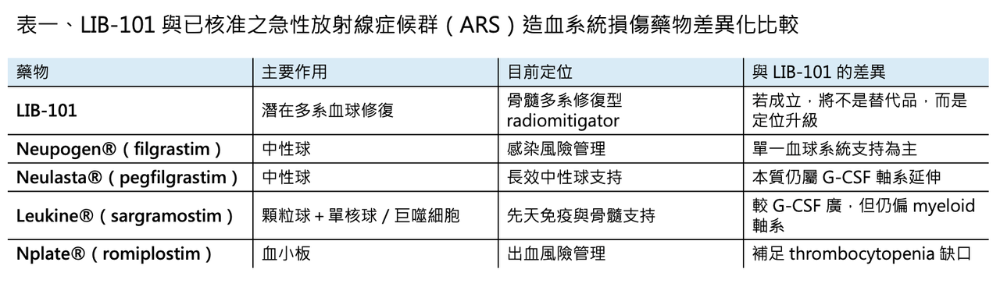
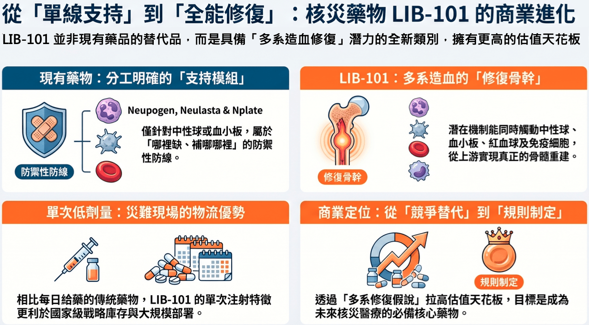
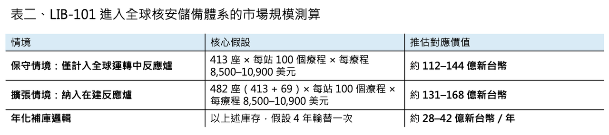

AI 吃電，核電回來了：為什麼麗寶新藥，可能站在下一個被重估的位置？
這兩年，市場都在追 AI。
有人追 GPU，有人追伺服器，有人追資料中心，也有人追電力股。
但如果再往下看一層，AI 真正推動的，從來不只是算力軍備競賽，而是整個能源供應鏈與安全備援體系的重新估值。
國際能源總署預估，到了 2030 年，全球資料中心用電量將成長到約 945 TWh，AI 是最重要的推動力量之一；同時，國際能源總署也明白指出，為了支撐資料中心新增的龐大用電需求，核能在這個世代後半段的重要性會愈來愈高。
放到核能供給端來看，國際原子能總署的資料顯示，截至 2026 年 3 月，全球有 413 座核電反應爐正在運轉，另有 69 座在建；世界核能協會的統計則更高一些，認為全球約有 440 座正在運轉，約 70 座在建，另有約 120 座已規劃。
這代表一件事：核能不是過去式，而是重新進入成長期的產業。
而當核能回到牌桌，真正會被重估的，不會只有發電設備。
因為核能從來不只是反應爐與電網，它背後還有一整套安全體系。世界衛生組織在 2023 年更新「輻射與核緊急事件關鍵藥物清單」時，就明確把這個領域分成幾大類，包括穩定碘、去除體內放射性污染的藥物，以及用來處理急性放射線症候群、尤其是骨髓與造血系統損傷的細胞因子藥物。
換句話說，核安醫療不是一個空泛概念，而是一套早就被世界衛生組織與各國政府正式定義出來的備援體系。
🔹 這也是麗寶新藥（7888.TWO）現在最值得看的地方。
LIB-101 並不是一個只補單一路徑血球的支持性藥物，而是一款重組人類介白素-12 （recombinant human IL-12, rHuIL-12）細胞激素蛋白新藥，核心機轉同時橫跨先天免疫、後天免疫與多系造血修復。當高劑量輻射真正打垮的是骨髓、血球與免疫平衡時，LIB-101 要處理的，正是核災醫療裡最致命的核心問題：不是只把某一種血球拉回來，而是同時把「造血撐住、免疫拉回來」。也因此，它不只具備切入急性輻射症候群的合理性，更有機會進一步延伸到血液腫瘤、實體腫瘤，以及與 PD-1、放療、化療、細胞治療並用的 IO 聯合療法市場。更重要的是，LIB-101 透過低劑量、皮下給藥與穩定釋放設計，同時產生多重免疫活性與避免傳統IL-12 的不良反應，跨越過去系統性 IL-12 難成藥的最大障礙。
🔹【麗寶新藥最近在日本福島的動作，不只是學術交流，而是最真實的核災醫療場景】
3 月 10 日，麗寶新藥與福島醫科大學啟動了 LIB-101 在「緊急輻射醫療」領域的研究者發起臨床試驗合作。
公司對外表示，首批成品藥預計近日送抵福島醫科大學。這項研究聚焦的情境，不是一般腫瘤治療，而是福島第一核電廠除役作業相關工作人員，若遇到重大輻射事故時，這個藥物是否能延緩或改善輻射性皮膚損傷的發生與惡化。
而福島醫科大學 3 月 30 日的新聞稿也直接提到，雙方已就這個藥物的持續國際合作研究進行進度回顧，並指出這項產品有機會成為核電廠除役等重大輻射曝露情境下的儲備藥物之一。
這件事的重要性在於：這不是一場漂亮的海外合作秀，而是把 LIB-101 放進了全球最具代表性的核災醫療場域之一。
🔹【為什麼福島這個場景很重要？】
因為福島醫科大學不是普通合作單位。
福島醫大的放射線災害醫療中心，是在 2011 年核災之後建立起來的，現在也是日本核災應變體系中的核心醫療單位之一。福島至今仍在因應反應爐除役作業所帶來的風險，持續建立緊急輻射曝露醫療體系。
東京電力也公開表示，福島第一核電站的除役工程將持續 30 到 40 年。
這句話的意思非常直接：麗寶新藥現在切入的，不是一個短線題材，而是一個可能長達數十年的真實需求場景。對投資人來說，這比任何題材都重要。因為一次性的新聞不值錢，能持續很多年的場景才值錢。
🔹【這條藥證路徑，不能再用一般癌症新藥的邏輯去看】
更值得注意的是，這個適應症的法規邏輯，與一般癌症新藥完全不同。
美國食品藥物管理局有一套專門針對化學、生物、放射與核災醫療對策所設計的特殊審查路徑。簡單說，當某種疾病或傷害無法在人體身上做有效性試驗，因為不符合倫理，也不可能真的讓人暴露在致命輻射裡做臨床試驗時，藥物可以透過充分且設計良好的動物試驗來證明療效，而人體部分則主要負責建立安全性與劑量橋接資料。
而且，這不是紙上談兵。
美國食品藥物管理局已經用這條路核准過多款用於急性放射線症候群造血系統損傷的藥物，包括：
Neupogen®（惠爾血添，filgrastim）、
Neulasta®（倍血添注射劑，pegfilgrastim）、
Leukine®（sargramostim）、
Nplate®（恩沛板，romiplostim）。
這代表一件事：這個適應症的核准路徑是活的，而且已經被反覆驗證過。
🔹【所以，上市速度不能用一般癌症藥的邏輯去看】
如果是標準癌症新藥，投資人最熟悉的路徑就是臨床一期、二期、三期，一路燒很多錢、收很多病人、走很多年。
但如果是核災醫療對策，事情不一樣。
因為這類產品最大的瓶頸，往往不是收幾百個病人做療效試驗。這件事在實務上根本做不到。真正的關鍵反而是三件事：

第一，動物模型是否夠扎實。
第二，人體安全資料是否夠厚。
第三，製造與品質體系，以及法規橋接設計是否到位。
也正因為如此，公司先前對外提到「最快 2 年內申請藥證」，從法規框架來看，不是完全沒有依據。至少在結構上，這條路比一般癌症藥第三期試驗需要的人數更少，開發時間也更可能縮短。
🔹【LIB-101 有沒有足夠的資料基礎？】
這才是投資人最該看的地方。
如果只看公開可以追溯的人體安全資料，LIB-101（重組人類介白素-12（Interleukin-12）蛋白質新藥）這個分子至少已經不是從零開始。
公開發表的臨床一期人體研究與後續擴增研究，合計納入 92 名健康受試者。結果顯示，單次低劑量皮下注射之後，最常見的不良反應是頭痛、頭暈與發冷，而且沒有觀察到免疫原性。
研究結論認為，低劑量的LIB-101，可以在沒有過度毒性的前提下，誘發多系血球與免疫相關反應。
除此之外，公開登錄的另一項針對急性放射線症候群方向的臨床二期安全性研究顯示，還有一項已完成、收案 200 名健康成人的試驗。雖然詳細結果尚未全部公開，但至少說明這個分子在人類安全資料庫上，公開可追溯的人數已接近 300 人等級。
再往血液腫瘤方向看，LIB-101已完成針對皮膚T細胞淋巴癌的臨床二a期試驗研究，16人的臨床治療結果中，已有明確的正向臨床結果。
這些資訊合起來，至少支持一個很重要的判斷：這不是一個只有動物資料、幾乎沒碰過人體的早期學術資產。
🔹【更重要的是，它在動物模型上也不是空白】
這個分子在輻射醫療對策上的有效性方向，也不是沒有基礎。
在非人靈長類模型中，LIB-101曾在致死劑量照射後，顯著提高輻射暴露後60天之整體存活率，並促進白血球、紅血球、血小板等多系血球恢復。
另一篇研究甚至直接比較了這個分子與 顆粒性白血球生長因子（G-CSF） 的效果。結果顯示，在沒有輸液、抗生素與血品支持的情況下，這個分子的存活利益優於對照組，也優於顆粒性白血球生長因子。
這一點非常關鍵。
當我們進一步把LIB-101與已核准的急性放射線症候群藥物進行優劣勢比較時，如下表與圖所示，在於目前已核准的急性放射線症候群造血系統損傷藥物，多半仍偏向特定血球系統的支持：Neupogen、Neulasta 主要集中在中性球軸，Leukine 偏向 granulocyte–macrophage 支持，Nplate 則鎖定血小板恢復；但如果LIB-101真的能在多系血球修復上成立，那它的商業定位就不只是另一個既有生長因子藥物的替代品，而可能是第一個更接近「骨髓整體修復」定位的新一代核安醫療資產。

🔹【真正該看的，是市場模型】
看到這裡，市場最該認真看的其實不是新聞標題，而是估值模型。如果拿已核准的急性放射線症候群藥物去反推單一療程價格，會發現這根本不是便宜市場。
以 Neupogen®（惠爾血添，filgrastim）為例，它在急性放射線症候群的標示劑量是每天每公斤體重 10 微克。若以 70 公斤成人估算，每日需要約 700 微克，依照公開藥價推算，14 天療程大約落在 1.09 萬美元。
另一個已核准產品Leukine®（sargramostim），若以同樣方式估算，14 天療程約在 8,500 美元左右。
也就是說，如果拿已上市的急性放射線症候群生物藥當作價格錨點，單一療程價格落在 8,500 到 10,900 美元，其實是合理區間。
把這個價格放回核電體系，如表二，如果 LIB-101 進入全球核安儲備體系，市場空間就出來了
若只用國際原子能總署統計的 413 座正在運轉的核電反應爐 做最保守情境，假設每一個核電場站等級的高風險單位，只配置 100 個療程 的事故儲備量，那麼對應的一次性藥品價值，大約就是 112 億到 144 億新台幣。
若再把 69 座在建反應爐 算進未來新增需求，則一次性市場可以進一步拉高到約 131 億到 168 億新台幣。
如果再假設這些庫存以 4 年 為一個輪替週期，那麼光是場站端的年化補庫市場，大致就會落在 28 億到 42 億新台幣 這個級距。
而且這裡還沒有把國家級戰略儲備算進去。
重點不是這個模型一定完全命中，而是：當你用已核准藥物的真實療程價格去回推，會發現這個市場根本不是大家想像中的小打小鬧。
🔹【國家級買方，其實早就存在】
很多人會以為，這種市場最大的問題是沒有買方。
但事實剛好相反。
美國的 Project BioShield 自 2004 年以來，就是為了讓民間產業願意投入化學、生物、放射與核災醫療對策而設立的制度。2019 到 2029 年的授權額度提高到 71 億美元。
更直接的是，美國政府過去就曾與 HemaMax／重組人類介白素-12 簽下總額最高可達 2.73 億美元 的合約，用來推進這個分子在急性放射線症候群造血系統損傷上的藥證進程。此外，美國公共衛生緊急醫療對策多年預算文件也寫得很清楚，自 2025 會計年度起，戰略國家儲備體系對放射與核災領域治療藥物的資金需求正在增加。
意思很簡單：美國政府不是未來可能成為買方，而是本來就是買方。
🔹【麗寶新藥也不是只有核安這一條路】
如果再往後看一層，麗寶新藥手上的資產，也不是只能講核安。
2024 年 7 月，美國食品藥物管理局的孤兒藥資料庫顯示，麗寶新藥已取得LIB-101用於 皮膚 T 細胞淋巴瘤 的孤兒藥資格。同年 11 月，歐洲藥品管理局也授予這個分子用於 皮膚 T 細胞淋巴瘤 的孤兒藥資格。
因為 LIB-101 不是只補造血，而是同時具備免疫啟動與微環境重塑能力，它的價值就不會只停留在核災醫療，LIB-101 具備有可與放療、化療、免疫檢查點抑制劑，以及細胞治療形成協同作用的潛力核心骨幹藥物，公司也明確提到其與 anti-PD-1 聯用時，可透過強化 T cell 與 dendritic cell 的交互作用，以及 IL-12 / IFN-γ 的正向回饋循環，增強抗腫瘤效果。
這代表麗寶手上的資產，不是只有單一路徑，而是可以形成：換句話說，如果核災醫療給 LIB-101 的是「國家級戰略需求」與法規特殊通道，那腫瘤與 IO 聯合療法給它的，則是更長期、更大的商業天花板。前者證明它在極端骨髓損傷與免疫失衡場景下的多重造血修復價值；後者則證明它不只是緊急對策，而是有機會成為一個可延伸到罕見血液腫瘤、實體腫瘤、以及免疫聯合治療的平台型免疫細胞激素藥物。
只是就現階段而言，最有機會先打開估值天花板的，仍然是前者。
🔹【所以，為什麼現在要重新看麗寶新藥？】
不是因為它有一顆很科幻的藥。
而是因為它同時踩中了三件已經開始發生，而且彼此能互相放大的事。
第一，AI 正在把核能重新送回成長敘事。
第二，核安醫療不是想像，而是一個有世界衛生組織、美國主管機關、美國政府採購體系、福島醫科大學與東京電力場景支撐的真實市場。
第三，LIB-101 並不是白紙資產，它背後有人體安全資料、非人靈長類存活數據、明確的特殊法規前例，現在又進到了福島這個最具象徵性的核災醫療現場。
麗寶新藥現在已經不是那種只有一段夢、卻沒有路徑的早期生技股。
它真正的投資命題比較像是：如果 AI 讓核電回來，而核電不只帶動發電設備，也帶動核安醫療儲備，那麼市場會不會開始重估，站在這個交叉口上的藥？
這才是麗寶新藥現在最值得投資人重新思考的地方。
參考資料：
公開資料＆各公司官網

